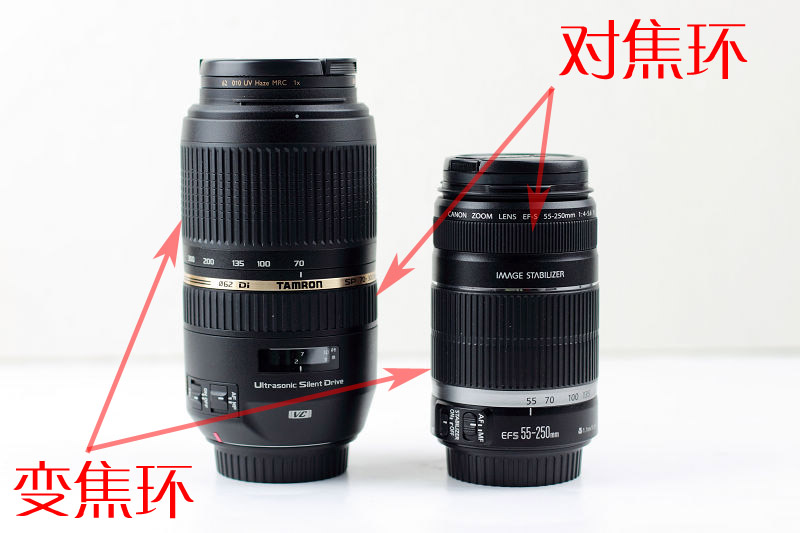

水蓝色的虫子 2014-07-07 23:23 3.42 分
操作性 3.00 耐用性 3.00 性价比 4.50 解像力 4.00 色彩还原 3.00 机械结构 3.00
总评 成像解析力对得起这个价，随便玩玩可以，是米不够的玩家一个选择。
优点 价格是最大优点，成像各方面还不差，焦点区域内成像锐利，防抖给力，手持拍摄基本不糊片。
缺点 对焦有时容易拉风箱，对焦行程长时合焦速度不够快，调焦环操作不够顺畅，阻尼不均匀。个人觉得做工稍显粗糙，不过这个价位的镜头似乎就是这样。建议全幅画幅玩家谨慎选择，觉得此头与6D以上机身不够协调！
大医生 2014-05-19 08:51 4.92 分
操作性 5.00 耐用性 4.50 性价比 5.00 解像力 5.00 色彩还原 5.00 机械结构 5.00
总评 锐度令人惊羡，防抖效果完美，色彩饱和油润，焦外柔美，价格极其低廉。
一支让老手放弃沉重的大三元长焦头的镜头。
优点 锐度超高，防抖效果优异，色彩饱和油润，重量轻便，外形威猛。
缺点 塑料感较强——追求轻便的代价。
nshen4600 2014-02-08 22:08 4.67 分
操作性 5.00 耐用性 4.50 性价比 5.00 解像力 4.50 色彩还原 4.50 机械结构 4.50
总评 性价比很高的一款镜头。
优点 外观及做工还是很不错的，重量适中；结像锐利，色彩还原好；焦段实用，防抖给力；2500元入手，配尼康D7100，拍出的片子绝不输原厂头。
缺点 口径稍小了点，如果光圈恒定F2.8就更好了，不过价钱摆在这了。
30d40d50d 2013-11-12 00:44 0.5 分
操作性 0.50 耐用性 0.50 性价比 0.50 解像力 0.50 色彩还原 0.50 机械结构 0.50
总评 说说大家都知道但都避而不谈的实话……
优点：便宜、工艺好、美观、功能全、重量适中。
致命缺点——色彩还原差劲！耐用性差劲！个体差异大！打开防抖很模糊！
总结——拿着舒服！用着别扭！所以很多很新的二手！别买！
优点 说说大家都知道但都避而不谈的实话……
优点：便宜、工艺好、美观、功能全、重量适中。
致命缺点——色彩还原差劲！耐用性差劲！个体差异大！打开防抖很模糊！
总结——拿着舒服！用着别扭！所以很多很新的二手！别买！
缺点 说说大家都知道但都避而不谈的实话……
优点：便宜、工艺好、美观、功能全、重量适中。
致命缺点——色彩还原差劲！耐用性差劲！个体差异大！打开防抖很模糊！
总结——拿着舒服！用着别扭！所以很多很新的二手！别买！
teda123 2013-06-14 13:11 4.75 分
操作性 5.00 耐用性 4.50 性价比 5.00 解像力 4.50 色彩还原 5.00 机械结构 4.50
总评 买来试用非常满意，出门携带方便，成像色彩浓郁锐利。
优点 轻便，焦段理想，画质优秀，防抖给力，性价比极高。堪比佳能红圈以外的所有相似焦段镜头。
缺点 光圈偏小，价格在那摆着。伸缩式镜头容易进灰。
hjlong 2012-12-26 10:36 4.25 分
操作性 4.00 耐用性 4.00 性价比 5.00 解像力 4.50 色彩还原 4.00 机械结构 4.00
总评 性价比挺高的一个头，使用将近一年了，还是不舍得放弃它去买原厂的红圈。第一，成像可以接受；第二，焦段比较满足我的需求。
优点 性价比高，成像可以，防抖给力。
缺点 如果可以内变焦就完美了。外变焦毕竟是吸尘机啊。对焦还是无法和原厂超声波头相对比。
Sunnic 2012-12-16 11:31 4.5 分
操作性 5.00 耐用性 4.00 性价比 5.00 解像力 4.50 色彩还原 4.50 机械结构 4.00
总评 画面解析度很高，防抖出色，轻便
优点 画面解析度很高，防抖出色，轻便，性价比很高
缺点 做工需要继续提高，密封性不强
tennnnnnn 2012-11-19 10:18
总评 中长焦王，价格实惠，现货2440
全新原装 店保3年
http://item.taobao.com/item.htm?spm=a1z10.3.0.74.Uw5Thc&id=12321316408&
优点 成像很好，对得起这个价位，超声波马达驱动
缺点 恒定光圈就更好了，呵呵
insol 2012-10-08 00:14
总评 这个镜头不错，大大超出我的预期。羊头的价格，（准）牛头的性能。
由于接触时间不长，担心评分不够客观，因此先不正式评分。
就目前的感受而言：
操作性： 5分； 简便易用，极佳的防抖。
耐用性： 5分； 未知，暂给5分。
性价比： 5分； 原厂的就不错，这个更好。
解像力： 4-5分； 定位、价格摆在那里，已经做得足够好了，4分是作为牛头的评分，5分是作为羊头的评分。
色彩还原：4-4.5分；比较主观，不好评判，感觉不错。
机械结构：4.5-5分；做工很好，外观漂亮，同上4.5分是牛头评分，5分是羊头评分。
羊头的定位和价格，准牛头的性能
优点 1）防抖非常有效。有时长焦端能提供4档安全快门，非常惊人。
2）成像不错。解析力、色彩挑不出明显的毛病。
3）外观看起来很威猛，看起来“专业”，满足虚荣心。
4）相对于其性能、功能价格非常有竞争力。
缺点 使用中没有发现明显缺点。
作为副厂镜头难免被原厂穿小鞋，兼容性、对焦响应总会被原厂算计一下。不过实际使用中发现，这方面出现问题的几率不大，不影响正常使用。
shchzh9 2012-09-22 01:31 4.75 分
操作性 5.00 耐用性 4.50 性价比 5.00 解像力 4.50 色彩还原 5.00 机械结构 4.50
总评 性价比高,解像力不错,用在D800上比D90更好使.对焦也比较快.关键是轻便易携带,虽然有N70-200,但外出不方便.此镜上街出游拍花鸟及扫街偷拍能胜任.对我一菜鸟来说物有所值.
优点 如上
缺点 刚用没多久,待发现.
gychen0715 2012-07-26 03:59 2.42 分
操作性 1.50 耐用性 2.00 性价比 3.00 解像力 3.00 色彩还原 3.00 机械结构 2.00
总评 唯一是优势就是价格
优点 价格是优势，画质过得去。
缺点 当时本着学习、练手的目的入手，感觉越用越考验耐心。拉风箱，每次开始用的时候总有“卡死”现象，与光线好坏关系不大，用一阵后又正常，现在还越来越明显了，不知是不是个体差异。实在有些无法忍受，上了原厂的大白，两相比较，那才叫苦尽甘来！奉劝各位别太在意性价比之类的说辞，有米还是直接上原厂头！
polly1224 2012-07-05 21:12 4.5 分
操作性 5.00 耐用性 4.00 性价比 5.00 解像力 4.50 色彩还原 4.50 机械结构 4.00
总评 很不错！
优点 性价比高、相对轻便（765g）、防抖、画质凑活。外形威猛。62口径。
缺点 非恒定光圈、塑料（这个价钱不能要求这些）；微距只能1:4，如果长焦端和腾龙 A17一样带个1:2微距就完美了。前镜片和前面一样感觉是粘上去的。
dreamwave 2012-05-28 21:19 4.5 分
操作性 4.50 耐用性 4.50 性价比 4.50 解像力 4.50 色彩还原 4.50 机械结构 4.50
总评 非常均衡的中长焦镜头
优点 防抖好用，解析力不俗，色彩也养眼
缺点 外观太巨大，特别是300端的长度，加上硕大的遮光罩，真的要吓死人。。。感觉第一片镜片是粘上去的，做工次了些。。。
ntarts 2012-05-14 11:27 4.58 分
操作性 4.50 耐用性 4.50 性价比 5.00 解像力 4.50 色彩还原 4.50 机械结构 4.50
总评 轻便，性价比高的长焦头。
优点 解像度和原厂70-300VR不相伯仲（甚至还略好一点点），但价格给力。 带防抖，哪怕是胶片机的拍摄成功率也大大提高，对于架子的依赖减小很多，配合数码的高ISO机动性优秀。
缺点 这个价格，这个能力，有啥缺点？
大汗001 2012-05-04 16:45 4.5 分
操作性 4.50 耐用性 4.50 性价比 5.00 解像力 4.50 色彩还原 4.50 机械结构 4.00
总评 从新打一下分，锐度高，色彩不错
优点 从新打一下分
缺点 从新打一下分
woodenbenchen 2012-04-11 17:42 4.58 分
操作性 4.50 耐用性 4.50 性价比 5.00 解像力 4.50 色彩还原 4.50 机械结构 4.50
总评 之前研究了很久买过的一个头后来亏了200出了，现在居然这个头还涨价了，很少有那么保值的
优点 性价比！相信买腾龙的第一注重的就是性价比，再加上腾龙60年之作，的确性价比超高，撞上遮光罩相当威猛，可以唬人，作为长焦也比较轻便，画质也是比较认可的，虽然没用过原厂的小驴炮，但是画质在电脑上放大看还真不错，usd对焦也挺快的
缺点 1，USD对焦声音实在太大，大的我以为镜头坏了
2，名副其实的阳光头，光圈摆死在那儿。
3,，变焦阻尼稍微有点大，可能新镜头的关系
4，做工（这个是我出的最大原因），实在太塑料了，摸着真没感觉，不像nikon新头，虽然也是塑料，但是那质感完全不一样，出了这个头以后我就彻底有了nikon原厂情节
nnjiao 2012-03-09 23:04 4.83 分
操作性 4.50 耐用性 4.50 性价比 5.00 解像力 5.00 色彩还原 5.00 机械结构 5.00
总评 感觉很超值！
优点 成像优异 对焦迅捷 变焦柔顺 防抖效果明显
做工优良 手感舒适
性价比较高
缺点 暂时没发现
trg777 2012-03-05 09:28 4.5 分
操作性 4.50 耐用性 4.50 性价比 5.00 解像力 4.50 色彩还原 4.50 机械结构 4.00
总评 性价比非常高的一支镜头，且运气好，网购了一支用在佳能60D上完全不跑。总的来说成像、防抖、基本性能对得起价格。且还是全副镜头。
优点 1成像中规中矩的情况下，防抖能力突出；
2性价比超级高；
3最大光圈基本可用，收一到二档可以出比较有质量的片子了；
4防抖能力增强了拍摄乐趣，快门按动时伴随的画面定格感觉很好。
缺点 1、做工不敢恭维，和同时入手的适马17-50/2.8有一定差距；
2、防抖开启时候有明显声音，不过想想他强大的防抖功能也就释怀了；
3、变焦环和对焦环倒挂实在不舒服，好在自动变焦是内变焦，影响不大。
养猪的帅哥 2012-02-10 21:00 3.92 分
操作性 4.00 耐用性 3.50 性价比 5.00 解像力 4.00 色彩还原 4.00 机械结构 3.00
总评 非常满意
优点 非常满意
缺点 非常满意
悬壶济世 2011-11-07 20:29 4.33 分
操作性 4.50 耐用性 4.00 性价比 5.00 解像力 4.00 色彩还原 4.50 机械结构 4.00
总评 作为腾龙60周年的代表作，这款镜头引人瞩目
优点 画质比各家原厂的75-300好太多，和它相差将近一倍的索尼730G比也没太大差距，凸显性价比
超声波马达比较安静，对焦迅速多了。
缺点 有些重，但不像是用料足做工好的代价。
200mm以上长焦端画质明显下降，对焦也慢了，实用性差。如果腾龙再出个70-210/F4的版本就好了。
大汗001 2011-11-04 15:13
总评 锐度不错，色彩对比尼康AF75-300有点偏品，拍人像比较讨巧，防抖实用，感觉是很好的镜头。
优点 全开光圈就比较锐利了，防抖实用
缺点 没有脚架环，没有手动光圈环，呵呵，个人观点
nikon5200 2011-10-30 22:58 4.5 分
操作性 5.00 耐用性 4.00 性价比 5.00 解像力 4.50 色彩还原 4.50 机械结构 4.00
总评 200端以下我觉得很完美了，300端全开光圈还是比较肉的收到F11会好些不过跟200MM还是有差距！
优点 价格便宜我买的2670大洋港行！
缺点 300端全开不可用，肉！和200端全开锐度差距有点大。
mimilaoban 2011-10-28 22:43 4.42 分
操作性 3.50 耐用性 4.00 性价比 5.00 解像力 5.00 色彩还原 4.50 机械结构 4.50
总评 总的说来，性价比比较高～比尼康的同规格的镜头便宜将近一千大洋～看镜头结构和尼康小纸炮严重一致，ED镜片的位置也一样啊，不知道尼康的是腾龙代工的啊，还是腾龙克隆的啊～usd马达的确很给力啊，扭矩确实太大了啊，就是声音比较吵～防抖确实好用，半按快门，画面一下子就hold住啦，但松开快门，防抖系统断电复位优点延时，防抖机构工作也有些噪音，机身的手感尚可，但是做工稍差，从前组后组把羞涩的内部结构红果果的都暴露了啊～前组镜片貌似是直接粘上去的？汗～在三百毫米端，有时还是要拉风箱的话啊～其他焦段对焦精准迅速：
优点 1对焦快，果断，USD扭矩大
2防抖强大
3手感尚可
4价格便宜
5外形亮骚
缺点 1对焦声音稍大
2防抖工作声音也不小
3三百毫米端对焦有时会拉风箱
4做工还需要提高啊，但是之所以便宜也就便宜在这了吧
5变焦环阻尼不均匀 ，可能本身尼康cam1000对焦模块能力也一般~~
skykiss 2011-10-25 17:34 4.5 分
操作性 4.50 耐用性 4.50 性价比 5.00 解像力 4.00 色彩还原 4.50 机械结构 4.50
总评 比较满意，全方位超过原厂的55-250.
优点 对焦安静且快，防抖超牛，全焦段最大光圈画质好，绝对威猛。
缺点 反扣遮光罩太杯具了，塑料感还是重一些。
時光日誌 2011-08-08 19:33 4.75 分
操作性 5.00 耐用性 4.50 性价比 5.00 解像力 4.50 色彩还原 5.00 机械结构 4.50
总评 价廉物美的选择，类似适马50之于标头，腾龙也看准商机出了730.价格比各家75-300狗头要高，但是素质超越很多，防抖也很给力，色彩有点似佳能L定，一改往日镜头形象。
优点 1、防抖好
2、色彩好
3、性价比
缺点 1、全开的解像力还不足以被评为“锐利”
sunshine007 2011-08-04 18:59 4.83 分
操作性 5.00 耐用性 4.50 性价比 5.00 解像力 5.00 色彩还原 4.50 机械结构 5.00
总评 只能说真的很超值啊，我用过3个长焦 分别是 nikon 70300 G，vr小手雷，腾龙老的 70-300 微距， 这只是最好的，无论 反差 锐度 色散，我没用过 XLP 但是看国外的使用心得说这只 反差超过XLP， 200-300 段也完全超过XLP
优点 全开光圈从70-300 基本就是最好成像了 缩小光圈 似乎没变化 真是吓坏我了
VC 真管用啊 我 真能降低4挡 一下就凝固了的感觉
反差真的达到了牛头级别 和17-50 一个水平
外型好 出门信心十足啊 呵呵
缺点 可能色彩还原没有尼康味道吧 不过我觉得很浓郁 主要是反差好带来的效果 和 腾龙17-50 一个味道
再轻一点就好了啊 785g 小一公斤
筲箕哥哥 2011-07-23 20:38 4.42 分
操作性 4.50 耐用性 4.50 性价比 5.00 解像力 4.00 色彩还原 4.00 机械结构 4.50
总评 性价比极高的一个730镜头，装上遮光罩后比较拉轰，是一个不错的旅行长焦镜，我在10年国庆前买的60周年纪念版还送真皮镜头袋可以加签名的。
优点 性价比一流，3k左右的同价位镜头基本是无敌了，比它便宜的远没它好，比它好的远比它贵。
解像力高，反差大，在aps机上中心和边角画质都不错全开可用，但全副上要注意边角全开画质不理想的问题。
造型拉轰，远看的话不强能骗一下外行，超声波马达非常安静，防抖效果一流。
缺点 就效果来说没能达到牛头一级，顶多是个非狗，因为全副上边缘画质还不理想，要是佳能730L那种口径的设计估计好些，基本是个旅行镜。
对焦速度比较慢，没有距离选择开关，拍运动的话比较蛋疼。
色彩有点干，拍风景还行，拍人似乎过了些。
没事别找我 2011-06-07 16:37 4.5 分
操作性 4.50 耐用性 4.50 性价比 5.00 解像力 4.50 色彩还原 4.50 机械结构 4.00
总评 非常棒的一支副厂头
优点 画质好，对焦快，防抖好用
缺点 马达声音有点大
snjjin 2011-05-16 19:09 3.17 分
操作性 4.00 耐用性 2.50 性价比 3.50 解像力 4.00 色彩还原 4.50 机械结构 0.50
总评 2011年5月12号，在环龙买了一个佳能口的腾龙70-300vc镜头。回家试镜头时发现在我50d相机上在别的模式下都没有问题，就是在A-DEP模式下，对焦不上焦，镜头里发出达达的马达堵转声。10次对焦有6-7次对不焦。5月13号也打过电话64735295腾龙维修公司去过没有结论。14号到环龙去了看看别的70-300vc镜头是否也是这样。老板找来一个维修相机师傅试了2个，其中一个有达达声10次有2次对不上焦。另外一个比我手上还差，声音还响10次有7-8次对不上焦，师傅说他也没有碰到过这种情况。也不知道这么回事，我白天和晚上都试过情况都一样。另外试了我腾龙17-50vc和佳能百微都没有这种情况发生。我的镜头编号是029455.型号是sp70-300mm vc usd。现在不知道这么办，先发个邮件，你们也可以试试我说的情况。我qq 110743942
优点 防抖好
缺点 对焦有问题
hjlong 2011-05-04 14:09
总评 外观挺拉风的。成像不错。
优点 成像锐度不错，超声波马达安静迅速，防抖一流。
缺点 对焦点小的时候对焦有点犹豫。
magicsayi 2011-05-02 17:42 4.58 分
操作性 4.50 耐用性 4.50 性价比 5.00 解像力 4.50 色彩还原 4.50 机械结构 4.50
总评 总体来说，就是性价比极高。
优点 超声波马达声音轻速度快，声音比原厂的大一点，速度和我原来XXB比，没感觉出差太多。支持全时手动。
防抖的效果非常好，300MM,半按快门后取景器里一下全部定住的感觉相当不错，但是防抖的声音，比马达的声音还要响，启动时候卡拉塔一下，实体店里试了几个，基本每个都这样，排除个体差异性。
锐度尚可，无暗角无畸变。
缺点 遮光罩内部没植绒，如果反扣遮光罩，这个镜头就变成推拉式变焦的了，因为变焦环在前，对焦环在后，又长又大的遮光罩把变焦环给整个完全挡住了。
暗部有拉风箱的情况。塑料壳，感觉没金属壳安心，但是重量和ISXXB差不多。
最致命的缺点，没有脚架环设计。。。镜头300MM全伸开，算上遮光罩，有30CM左右。力臂极大，放在云台上直接点头。。。。
大丈夫之摄 2011-04-09 00:27
总评 只说一点：防抖效果绝对秒杀佳能！
优点 防抖极佳！半按快门景物瞬间凝固，那个感觉太给力了！即使是号称双重防抖的佳能红圈百微都难以有此功力。
缺点 很粗
chaoyagami 2011-04-04 21:40 4.5 分
操作性 4.50 耐用性 4.50 性价比 5.00 解像力 4.50 色彩还原 4.00 机械结构 4.50
总评 感觉这个价位有这个画质的镜头还是很超值的，至少佳能在这个价位没有这种类型这种水平的镜头。
优点 中心对焦精准，佳能60D上不存在跑焦问题。
镜头全程都可以使用最大光圈，并且在最大光圈时，焦内效果相当不错。
防抖效果极其优秀。
滤镜尺寸采用62mm，还能省点外设钱。
重量相当合适，和爱死小小白差不多。
缺点 除了中心对焦点，其他对焦点精度较差，比不上原厂头。
如评测所说，焦外效果较差。
虽然使用了超声波马达，但对焦速度比不上佳能和适马的超声波马达对焦速度。
镜头噪音稍大，可以接受。
enzo1202 2011-04-01 21:23 4.83 分
操作性 5.00 耐用性 4.50 性价比 5.00 解像力 5.00 色彩还原 4.50 机械结构 5.00
总评 不是非要小竹炮那样的画质的话，一定要拥有A005
优点 1、成像非常好，300mm端绝对够好了
2、VC超强，300端，1/50成功率高。
3、腾龙终于有USD了，快，不响
4、遮光罩很漂亮
5、粗
缺点 1、有点重
2、VC比较响，担心寿命
3、焦外不怎么好看
zhukov 2011-03-19 22:49 4.42 分
操作性 4.50 耐用性 4.00 性价比 5.00 解像力 4.50 色彩还原 4.00 机械结构 4.50
总评 性价比不错
优点 防抖、环形超声波马达都带
防抖不输原厂
成像比较锐
加上遮光罩之后外形威猛
缺点 对焦速度还是没原厂快
变焦阻尼不均匀
反差比较大
京华烟云 2011-01-17 11:02 4.17 分
操作性 4.00 耐用性 4.00 性价比 5.00 解像力 4.00 色彩还原 4.00 机械结构 4.00
总评 这个价位目前首屈一指的镜头
优点 1、锐度不错，即使300端也可以接受，分辨率比70-300 DO小绿好许多；
2、一般情况下，USD环形超声波马达对焦迅速果断，好过原厂70-300 IS（微型超声波马达）和适马70-300 OS（普通马达）。USD尽管还达不到原厂USM的水平，但比以前风箱拉的吱吱响让人苦不堪言的腾龙镜头，已经好了不知道多少倍。
3、VC防抖很有效，自己用300端手持，多数情况下能达到1/13s不糊。对焦比较准确，在我的5D2上没有发现跑焦。
4、外型设计不错，尤其是加上遮光罩很拉风，能让不太懂的观众产生高端专业头的错觉。
5、性价比非常高，全新行货才3300，二手不到三千，比起原厂70-300 IS或价格更高的小绿，无疑很吸引人。
缺点 1、仍有腾龙镜头成像的特点，反差比较大，层次稍欠，画面发干，拍人像可能会不讨好；
2、光线不好时仍偶有拉风箱现象，USD尽管也是超声波，但对焦没有原厂USM安静，转动时能听到明显的摩擦声，是不是个体差异不知道；
3、VC防抖的启动时间似乎比原厂IS稍长，但仅是个人感觉；
4、镜身材料大量采用塑料，让人感觉不太结实；即使这样，重量和体积却都并不算小，一定程度上影响了便携性，即使镜头收缩时比起不到10公分小绿来也长了差不多一半。
5、遮光罩尽管拉风，但不用时如果反扣到镜身上，却正好遮挡住变焦环，也就是反扣的时候就没法变焦了，不知道是设计缺陷还是特意就这样安排来着。
gerrycai 2011-01-10 13:55 4.25 分
操作性 4.00 耐用性 4.00 性价比 5.00 解像力 4.00 色彩还原 4.50 机械结构 4.00
总评 总体来说这头这个价位，画质算是不错！要求高的只能选择L去了。
优点 防抖比较好用，对焦不能算快，但是已经满足一般需求。
缺点 做工可以改为内变就好了，锐度可以再提高些就好了。
宾得物语 2010-12-25 16:49 4.5 分
操作性 4.50 耐用性 4.00 性价比 5.00 解像力 4.50 色彩还原 4.50 机械结构 4.50
总评 从A16开始对腾龙有的好感，A005出来后便拿下了，总体比较满意，特别是防抖。锐度和图丽AT-X535在同焦段同光圈下比较过，稍差。
优点 1.色彩还原尚可。
2.防抖没的说。
3.性价比高。
4.全焦段锐度全开都可用。
缺点 1.对焦环在后容易误碰脱焦。
2.光线稍暗容易拉风箱。
从耗子胖成猪 2010-12-13 18:04 3.58 分
操作性 3.00 耐用性 3.50 性价比 4.00 解像力 3.50 色彩还原 4.00 机械结构 3.50
总评 初玩DSLR时，对腾龙的感觉挺不错。比肩原厂的SP90微更是当年令哥萦回梦绕……
然时境过迁，哥在器材党的路上高歌猛进,原厂情结在使用中不断加深。再加上大家好评如潮、“浓郁锐利”的腾龙A16，玩过之后也发现不过尔尔……于是对腾龙也就慢慢没有啥热情了。
本次同事要入腾龙的70-300VC，淘汰EFS55-250，我是反对的。
理由是在500D上，70-300VC不可能比EFS 55-250更优秀。不过在70-300VC诱人的焦外勾引，还有某某网文的毒害（http://forum.xitek.com/showthread.php?threadid=522964），最终还是入手了。
70-300VC的做工勉勉强强过得去吧。比普通的套头好，但是比L头就差了一个档次。该死的对焦环位于变焦环的后面，这个令我非常的不爽！
因为该镜头的设计是可以全时手动对焦，而对焦环的位置非常容易跟变焦环一起转动。（如果在使用的时候，不小心用手转动了对焦环，则很有可能造成失焦！）
70-300VC采用外变焦设计，好处是近摄焦段不缩水。坏处就是密封性不佳，可靠性比较差。也部分的影响了亮骚……
变焦的手感相对而言，便是比较失败的。比较涩，而且阻尼感不均匀。
在公司的办公室里做了一些试拍，对焦并不快。暗处比较犹豫。例如mm的头发，比较难对上。（ISO 1600 F5.6 1/6s 的测光情况下。）
我也简单的对这个70-300VC做了个小小的测试。
测试条件如下：
相机：500D + 百诺金属三脚架 + 2秒延时拍摄 + LV模式10倍放大精确对焦
镜头：去除了UV镜，关闭了防抖。
焦段：200mm （在200mm上，70-300的最大光圈是F5，而EFS 55-250是F5.6）
下图为中心焦点处100%的截图比较。可以看到，70-300VC的反差、锐度均与EFS 55-250有一定的差距。
兴致勃勃的拿着70-300VC再拍几张。70-300VC给我一个比较大的惊喜就是防抖很出色！由于室内的亮度比较低，很多图片都是500D在ISO 1600的情况下拍的。但在电脑上看，基本上1/25至1/30的快门，我就可以把300mm端稳了。极端的情况下，1/10秒还有一定的出片概率。
对于这个成绩，我是比较满意的。这充分说明了70-300VC的防抖性能已经不亚于ISXXB了。恩，我甚至可以说，70-300VC的防抖好像比ISXXB还好……
有用F口的朋友反映该头欠曝？不过我这个EF口的镜头在500D上的表现很正常。
总结一下：
口袋缺米的朋友值得考虑一下。3K的价格，有超声波，有超强的防抖，真是不容易啊。但如果指望这样的镜头抓拍，我觉得不太现实。要求高的朋友还是老老实实的选CANON的70-200L系列吧。
最后放几张随拍图。都是RAW直接出片。没有任何调节。ISO 1600,快门没有超过1/30的。所以小图大家看看热闹就行。呵呵。
优点 1、超强的防抖
2、色彩感觉没有偏黄，而且焦外很柔和，比ISXXB都好。可以客串人像。（我放言：一年后大家再来看无忌专题贴，70-300VC的人像图肯定干掉ISXXB的。）
3、价格比XXB低
4、样子很骚，特别是上了罩子之后……
缺点 缺点：
1、我讨厌对焦环靠后的设计。
2、锐度不及期望值。
3、对焦不够快、不够果断。（缺少了对焦行程切换键）

笑影 2010-11-09 15:19 4.5 分
操作性 4.50 耐用性 4.50 性价比 5.00 解像力 4.50 色彩还原 4.00 机械结构 4.50
总评 价格和性能算得上价廉物美吧！加遮光罩后外形比较吓人，镜身比较粗壮，不过滤镜接口才62mm，感觉小了点，应该像尼康一样做到67mm比较合适。
优点 对焦总算安静了
防抖效果很强，不比新版IS和VR差
变焦和对焦手感还不错
成像个人觉得还行，特别是远端大光圈相对很好啦
缺点 和佳能机身配合有跑焦，不过估计和佳能机身有关吧
塑料材质还做这么大，有点不够方便，小巧点会更好吧
个人认为滤镜接口小了点，与粗大的镜身不太协调
邀明月 2010-11-05 19:17 4.5 分
操作性 5.00 耐用性 4.50 性价比 5.00 解像力 4.50 色彩还原 4.00 机械结构 4.00
总评 总体满意，很不错的镜头
优点 1.防抖很强大，300mm时1/10S的速度一般不会模糊，画面几乎凝滞。
2.锐，300mm端光圈全开依旧锐，中焦段的锐度和原厂的4000来块的标准变焦头锐度相当。做人像拍摄都可以。
3.色彩还原还不错，但天气不好时会稍微淡一些。
4.外形很骚，嘿嘿
缺点 塑料感强，特别是变焦伸出的那一段，用手指弹一下，感觉就是一个空心的塑料筒。
光圈会偏小些。
对焦还不是非常快
gecy2000 2010-10-14 15:10 4.08 分
操作性 4.50 耐用性 4.00 性价比 4.50 解像力 4.00 色彩还原 4.00 机械结构 3.50
总评 300端的锐度还是比较令人满意，高性价比！
优点 大光圈时锐度就很不错，200端以上没有太大锐度下降。
遮光罩的形状实在很是拉风！
缺点 对焦！与nikon的SWM相比声音还是有点的，感觉速度也略慢，当然只是“略”。长焦端在室内弱光环境拉风箱是在所难免的。
口径如果再大一些就好了，不过如果那样就完全变成nikon AF-S VR的山寨版了，可能价格上的那一点点优势也就没有了。
xxjswjrf 2010-10-05 10:26
总评 有性价比的长焦头，各焦段锐度相当满意，光线暗有些拉风箱声音，但很小，比尼康原厂的大些，对焦精准，焦段有点紧，可能是刚开始使用，防抖效果比较好，好过尼康70-300VR二代.
优点 各焦段最大光圈锐；防抖效果不比尼康差；变焦和对焦顺手；重量尚好，在这个焦段不算重；
缺点 说是超声波马达，噪音还是有的，没有尼康的安静。
lpkanb 2010-09-21 01:00 4.5 分
操作性 5.00 耐用性 4.50 性价比 4.50 解像力 4.50 色彩还原 4.00 机械结构 4.50
总评 有性价比的长焦头，各焦段锐度相当满意，光线暗有些拉风箱声音，但很小，比尼康原厂的大些，对焦精准，焦段有点紧，可能是刚开始使用，防抖效果比较好，好过尼康70-300VR二代，在200-300端对白色和黑色有少些紫边。
优点 操控性能不错，防抖效果明显，色彩表达不错，解像力和对焦都比较满意，外观很强大，遮光罩很喜欢，背景的虚化效果不错，锐度纯，手动对焦和自动对焦不用切换按扭。
缺点 对较暗有拉风箱现象，对暗处比70-300VR弱一些。色彩表现没有原厂的艳，200-300端对白色和黑色有紫边，对焦声音比原厂大些。
幽o兰 2010-09-11 23:12 4.58 分
操作性 5.00 耐用性 4.00 性价比 5.00 解像力 4.50 色彩还原 4.50 机械结构 4.50
总评 总体用起来很满意。物有所值。
优点 各焦段最大光圈锐；防抖效果不比尼康差；变焦和对焦顺手；重量尚好，在这个焦段不算重；
缺点 说是超声波马达，噪音还是有的，没有尼康的安静。
变焦时各焦段力度不均匀，可能是新镜头，感觉稍微有点生涩。